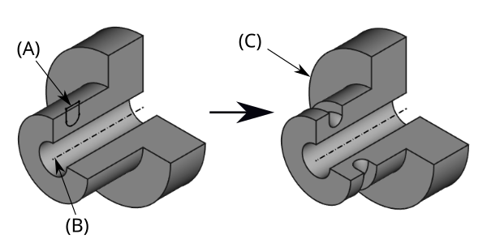

PartDesign Groove/pl
|
|
| Lokalizacja w menu |
|---|
| Projekt Części → Utwórz cechę przez odjęcie → Rowek |
| Środowisko pracy |
| Projekt Części |
| Domyślny skrót |
| brak |
| Wprowadzono w wersji |
| - |
| Zobacz także |
| Wyciągnij przez obrót |
Opis
Narzędzie  Rowek tworzy bryłę w aktywnej Zawartości poprzez obrót szkicu, obiektu 2D lub jednej bądź kilku ścian wokół zadanej osi. Jego kształt jest łączony z istniejącą bryłą za pomocą operacji logicznej odejmowania lub części wspólnej.
Rowek tworzy bryłę w aktywnej Zawartości poprzez obrót szkicu, obiektu 2D lub jednej bądź kilku ścian wokół zadanej osi. Jego kształt jest łączony z istniejącą bryłą za pomocą operacji logicznej odejmowania lub części wspólnej.


Powyżej: szkic (A) jest obracany wokół osi (B). Wynikowy rowek na bryle (C) jest pokazany po prawej stronie.
Użycie
- Wybierz pojedynczy szkic lub podobny obiekt 2D albo jedną lub więcej ścian z pojedynczego szkicu lub innego obiektu albo z samego obiektu Zawartości.
- Istnieje kilka sposobów wywołania narzędzia:
- Naciśnij przycisk
 Rowek.
Rowek. - Wybierz z menu opcję Projekt Części → Cechy subtraktywne → Rowek.
- Naciśnij przycisk
- Otworzy się panel zadań.
- Ustaw parametry, zobacz Options poniżej. Jeśli zaznaczona jest opcja Pokaż interaktywne manipulatory podczas edycji cech w preferencjach (domyślnie), parametry kątowe można regulować za pomocą interaktywnych uchwytów w Widoku 3D.
- Naciśnij przycisk OK, aby zamknąć panel zadań i zakończyć działanie narzędzia.
- Cecha Rowka pojawi się pod aktywnym obiektem Zawartości.
Edycja
Rowek można edytować po jego utworzeniu na dwa sposoby:
- Klikając go dwukrotnie w Widoku drzewa lub klikając prawym przyciskiem myszy i wybierając w menu kontekstowym Edytuj Rowek; otwiera to panel zadań oraz interaktywne uchwyty (jeśli są włączone).
- Poprzez Widok właściwości.
Opcje
Panel zadań oferuje następujące ustawieniaː

Początek
Ustawia kątową pozycję startową rowka wokół osi. Domyślnie rowek zaczyna się na płaszczyźnie szkicu lub ścianie używanej jako jego profil.
- Płaszczyzna profilu (domyślne): rowek zaczyna się bezpośrednio na płaszczyźnie szkicu profilu lub na ścianie.
- Odsunięcie: rowek zaczyna się w numerycznej odległości kątowej od profilu wprowadzonej w polu Odsunięcie początku.
- Odniesienie: rowek zaczyna się na ścianie, płaszczyźnie odniesienia lub szkicu wskazanym za pomocą przycisku Wybierz odniesienie.
Kierunek
Ustala kierunek (kierunki) rowkowania:
- Jednostronnie: rowek rozciąga się po jednej stronie szkicu lub ściany.
- Dwustronnie: rowek rozciąga się po obu stronach szkicu lub ściany. Pojawiają się dwa podmenu (Strona 1 oraz Strona 2), aby określić rowkowanie dla każdej ze stron.
- Symetrycznie: rowek jest symetryczny względem oryginalnego szkicu lub ściany.
Oś
Określa oś rowka:
- Pionowa oś szkicu: wybiera pionową oś szkicu.
- Pozioma oś szkicu: wybiera poziomą oś szkicu.
- Linia konstrukcyjna: wybiera linię konstrukcyjną ze szkicu używanego przez rowek. Lista rozwijana będzie zawierać pozycję dla każdej linii konstrukcyjnej. Pierwsza linia konstrukcyjna będzie oznaczona jako Linia konstrukcyjna 1.
- Oś bazowa (X/Y/Z): wybiera oś X, Y lub Z odniesienia położenia bryły.
- Wybierz odniesienie…: umożliwia wybór prostej krawędzi lub linii odniesienia z obiektu Zawartości.
Należy pamiętać, że podczas zmiany osi opcja Odwrócony może zostać (nie)zaznaczona automatycznie.
Typ
Dla Strony 1 oraz Strony 2, jeśli dotyczy.
Oferuje cztery sposoby określenia kąta rowkowania:
- Kąt: wpisz wartość liczbową dla opcji Kąt rowkowania. Przy opcji Kierunek ustawionej na Symetrycznie rowkowanie rozciągnie się o połowę podanego kąta po obu stronach szkicu lub ściany.
- Przez wszystko: rowkowanie rozciągnie się aż do ostatniej ściany podpory napotkanej na jego drodze. Przy opcji Kierunek ustawionej na Symetrycznie rowkowanie przejdzie na wylot przez cały materiał w obu kierunkach.
- Do pierwszego: rowkowanie rozciągnie się aż do pierwszej ściany podpory napotkanej na jego drodze. Jeśli nie ma podpory, pojawi się komunikat o błędzie.
- Do ściany: rowkowanie rozciągnie się aż do ściany. Naciśnij przycisk Ściana i wybierz ścianę lub płaszczyznę odniesienia z obiektu Zawartości.
Kąt
Dla Strony 1 oraz Strony 2, jeśli dotyczy.
Określa kąt rowka. Ta opcja jest dostępna tylko wtedy, gdy Typ (dla tej samej strony) to Kąt. Kąty większe niż 360° nie są dostępne.
Rzutowanie wybranej osi na płaszczyznę profilu
Rzutuje wybraną oś na płaszczyznę profilu, jeśli profil jest płaski (dostępne tylko dla płaskich profili). Jeśli odznaczone (domyślnie), oś jest używana w jej oryginalnej pozycji i kierunku.
Odwrócony
Odwraca kierunek rowka.
Operacja
Ustawia operację logiczną używaną do połączenia rowka z bazową bryłą.
- Odjęcie (domyślne): rowek usuwa obróconą objętość z bazowej bryły jak w poprzednich wersjach.
- Część wspólna: rowek zachowuje tylko objętość dzieloną między obróconym profilem i bazową bryłą, odrzucając wszystko inne.
Przelicz ponownie przy zmianie
Ta opcja powinna być zaznaczona, jeśli zaznaczona jest opcja Pokaż wynik końcowy lub Pokaż nakładkę podglądu.
Pokaż wynik końcowy
Jeśli opcja jest zaznaczona, wyświetlany jest łączny wynik poprzednich cech oraz bieżącej operacji.
Pokaż nakładkę podglądu
Jeśli opcja jest zaznaczona, wynik bieżącej operacji jest wyświetlany jako nakładka.
Właściwości
Zapoznaj się również z informacjami na stronie: Widok właściwości.
A PartDesign Groove object is derived from a Part Feature object and inherits all its properties. It also has the following additional properties:
Dane
Rowek
- DANETyp (
Enumeration) - DANEBaza (
Vector): (read-only) - DANEOś (
Vector): (read-only) - DANEKąt (
Angle) - DANEKąt2 (
Angle) - DANEDo powierzchni (
LinkSub) - DANEOś odniesienia (
LinkSub) - DANERzutowanie osi (
Bool): rzutuje oś odniesienia na płaszczyznę profilu, zobacz Opcje. dostępne w wersji 26.3
Projekt Części
See PartDesign Pocket.
Side1
- DANEType (
Enumeration):Angle,ThroughAll,UpToFirstorUpToFace. Do not use?TwoAngles. Defines how the groove will end. - DANEAngle (
Angle): The angle of the groove. - DANEUp To Face (
LinkSub): Face where the groove will end. - DANEUp To Shape (
LinkSubList): Not used.
Side2
The properties in this group are only editable if DANESide Type is Two sides. See the Side1 group for more information about the properties.
- DANEType2 (
Enumeration): introduced in 26.3 - DANEAngle2 (
Angle) - DANEUp To Face2 (
LinkSub): introduced in 1.1 - DANEUp To Shape2 (
LinkSubList): introduced in 1.1
Szkic bazowy
See PartDesign Pad.
Początek
See PartDesign Pad.
- Narzędzia struktury: Część, Grupa
- Narzędzia wspomagające: Utwórz zawartość, Nowy szkic, Edycja szkicu, Mapuj szkic na ścianę, Sprawdź poprawność szkicu , Sprawdź geometrię, Łącznik kształtów podrzędnych, Utwórz klona, Płaszczyzna odniesienia, Linia odniesienia, Punkt odniesienia, Lokalny układ współrzędnych
- Narzędzia do modelowania
- Narzędzia addytywne: Wyciągnięcie, Wyciągnij przez obrót, Wyciągnięcie przez profile, Wyciągnięcie po ścieżce, Addytywna helisa, Addytywny sześcian, Addytywny walec,Addytywna sfera, Addytywny stożek, Addytywna elipsoida, Addytywny torus, Addytywny graniastosłup, Addytywny klin
- Narzędzia subtraktywne: Kieszeń, Otwór, Rowek, Subtraktywne wyciągnięcie przez profile, Subtraktywne wyciągnięcie po ścieżce, Subtraktywna helisa, Subtraktywny sześcian, Subtraktywny walec, Subtraktywna sfera, Subtraktywny stożek, Subtraktywna elipsoida, Subtraktywny torus,Subtraktywny graniastosłup, Subtraktywny klin
- Narzędzia operacji logicznych Funkcje logiczne
- Narzędzia ulepszające: Zaokrąglenie, Fazka, Pochylenie ścian, Grubość
- Narzędzia do transformacji: Odbicie lustrzane, Szyk liniowy, Szyk kołowy, Transformacja wielokrotna, Skaluj
- Dodatki: Przenieś, Koło łańcuchowe, Koło zębate ewolwentowe, Kreator projektowania wału
- Narzędzia menu kontekstowego: Ustaw czubek, Przenieś cechę, Przenieś cechę w drzewie, Wygląd zewnętrzny, Ustaw kolor
- Preferencje: Ustawienia, Dostrajanie parametrów
- Jak zacząć
- Instalacja: Pobieranie programu, Windows, Linux, Mac, Dodatkowych komponentów, Docker, AppImage, Ubuntu Snap
- Podstawy: Informacje na temat FreeCAD, Interfejs użytkownika, Profil nawigacji myszką, Metody wyboru, Nazwa obiektu, Edytor ustawień, Środowiska pracy, Struktura dokumentu, Właściwości, Pomóż w rozwoju FreeCAD, Dotacje
- Pomoc: Poradniki, Wideo poradniki
- Środowiska pracy: Strona Startowa, Złożenie, BIM, CAM, Rysunek Roboczy, MES, Inspekcja, Siatka, OpenSCAD, Część, Projekt Części, Punkty, Inżynieria Wsteczna, Robot, Szkicownik, Arkusz Kalkulacyjny, Powierzchnia 3D, Rysunek Techniczny, Test Framework